Cases / COC Educação
Projeto anterior à BoldBrands
COC Educação
Rebranding de uma rede com quase 60 anos de história, do berçário ao pré-vestibular.
Este case foi realizado por Bruno Leal, hoje sócio da BoldBrands, em equipe e antes da fundação da empresa. Ele faz parte da trajetória dos sócios que nos trouxe até aqui.
- Cliente
- COC Educação
- Setor
- Educação
- Escopo
- Estratégia de marca, identidade visual, padrão de imagem com IA e aplicações
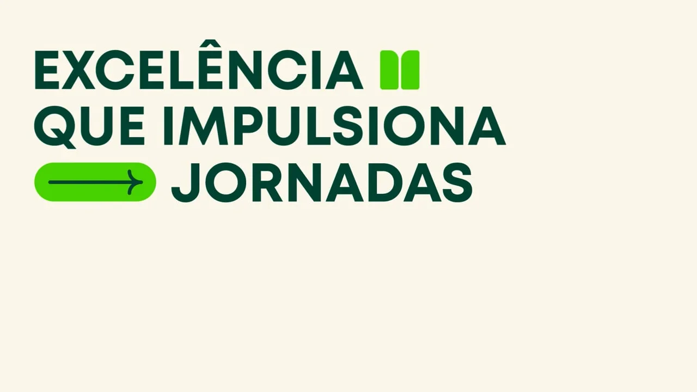
O desafio
Uma marca com quase 60 anos de confiança precisava soar como o futuro para quem está escolhendo o próprio.
O COC é uma das marcas mais tradicionais da educação brasileira e tem forte reconhecimento na preparação para o vestibular. Para as novas gerações, no entanto, a marca parecia defasada. O desafio era atualizá-la dentro de uma estratégia mais premium, com foco no Terceirão, o produto do 3º ano do ensino médio, sem perder a força de uma rede que atende do berçário ao pré-vestibular.
Contexto: números do grupo (sistemas COC e Dom Bosco) em 2021, ano em que a Arco Educação adquiriu os dois sistemas por R$ 920 milhões.
O que foi feito
Estratégia de marca
Estudo aprofundado de branding e definição do posicionamento premium com foco no Terceirão.
Identidade visual
Nova linguagem visual conectada ao universo jovem: logotipo, grid modular, tipografia, sistema de ícones e paleta.
Padrão de imagem com IA
Tudo foi pensado para criar um padrão de geração de imagens via IA: direção fotográfica consistente — lentes, enquadramentos, styling e tratamento de cor — que garante unidade estética e permite escalar a produção de imagens da rede.
Desdobramento
Aplicação em mídia exterior, plataforma digital, redes sociais e material impresso.
A marca em uso
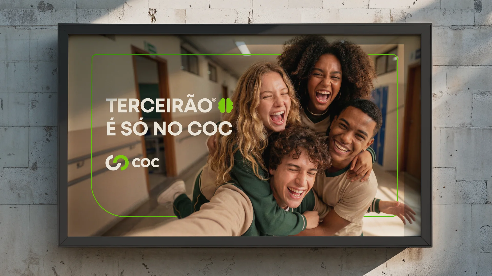
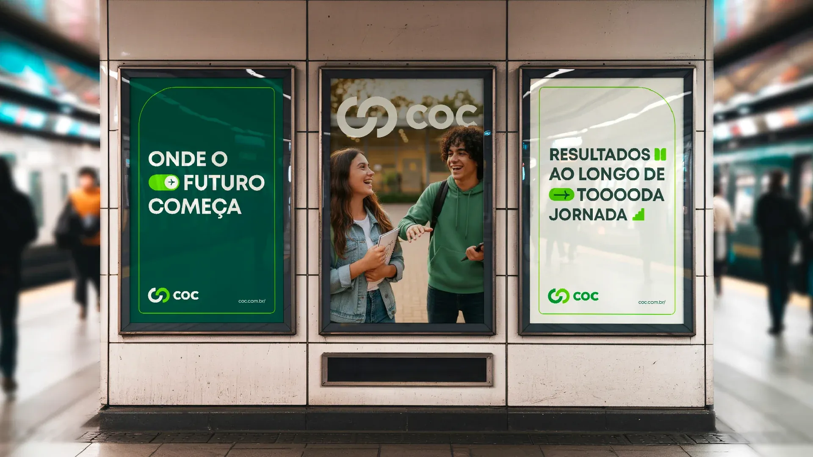
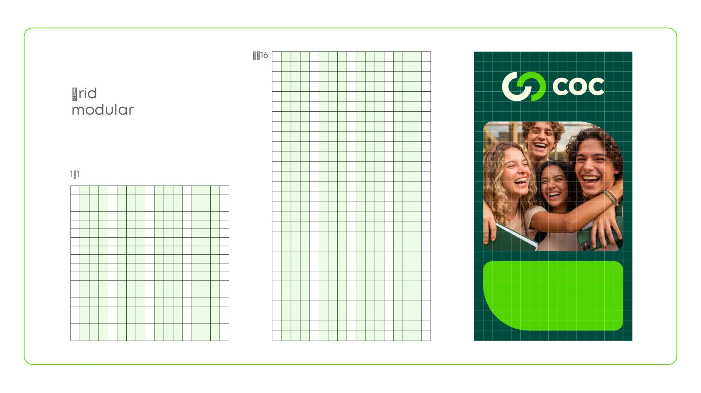
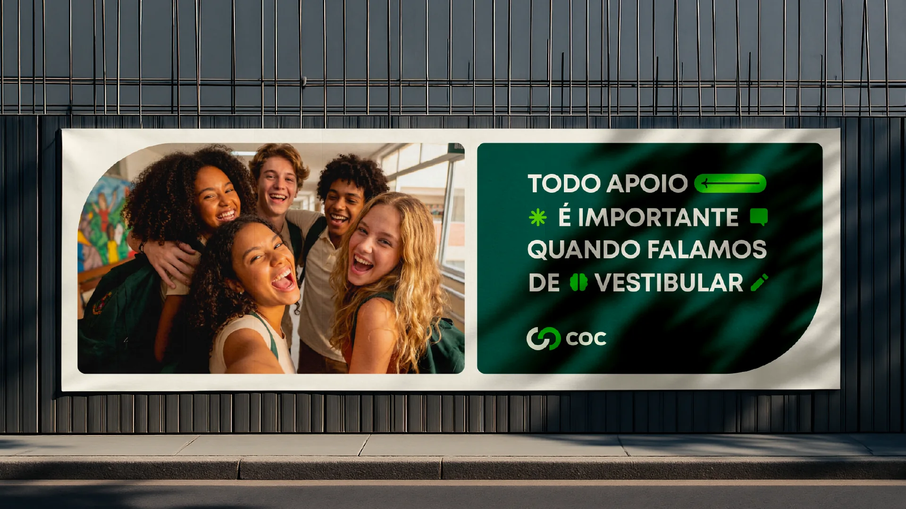
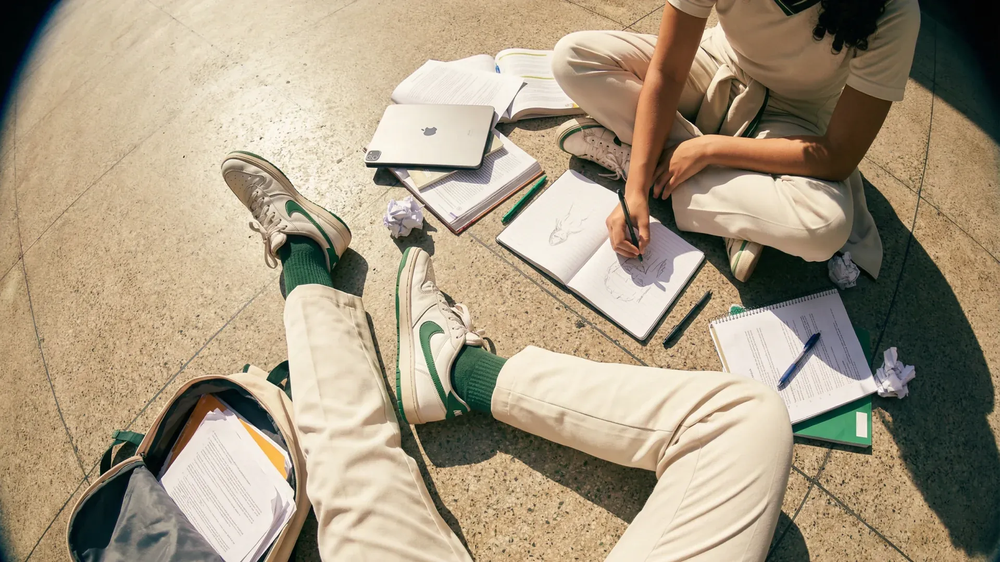
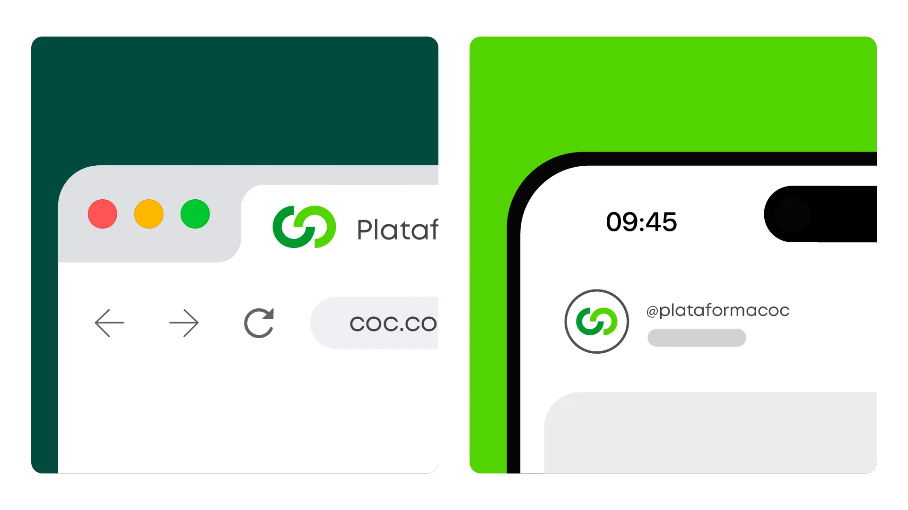
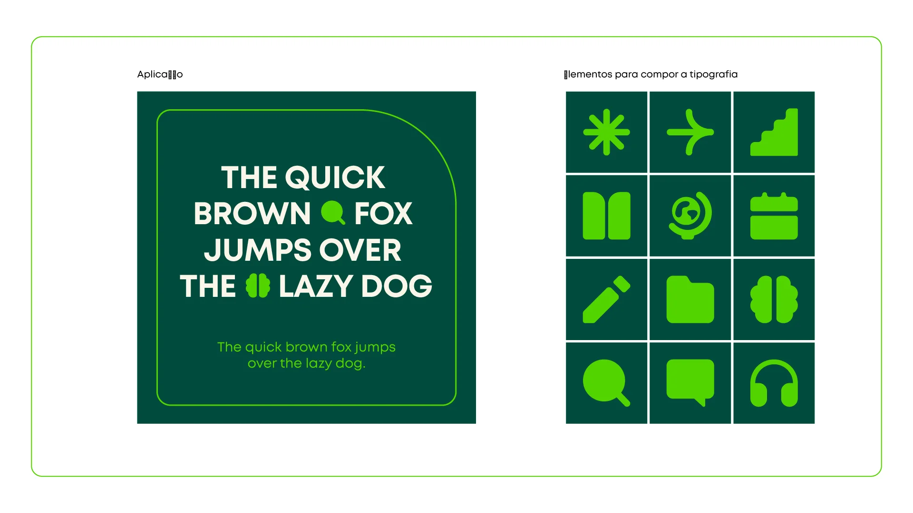
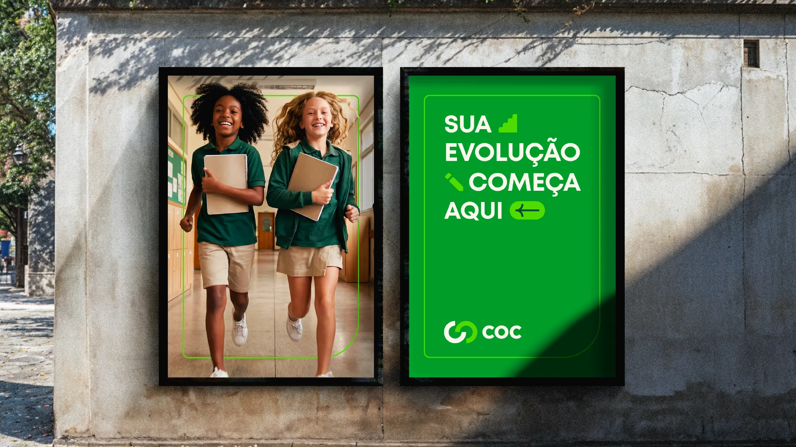
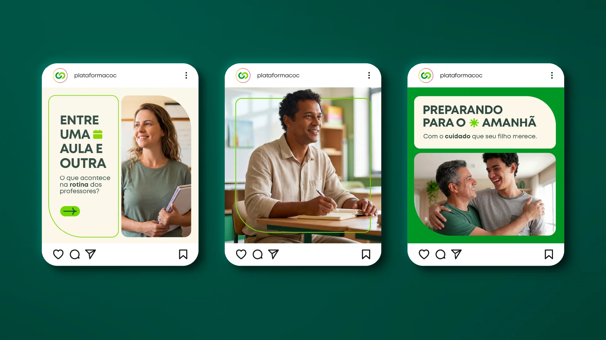
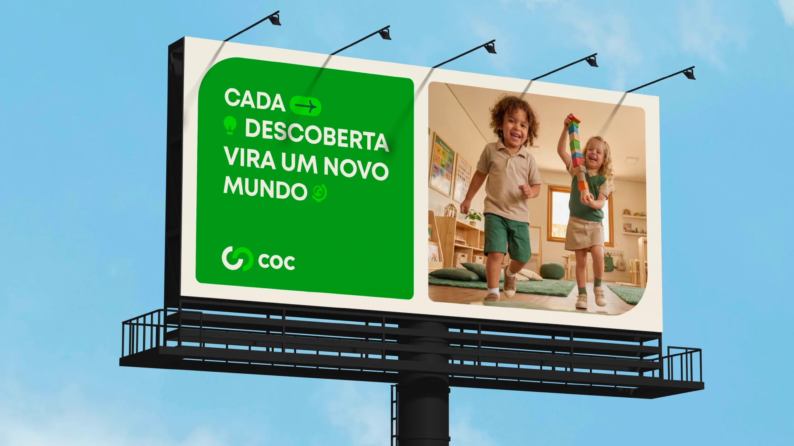
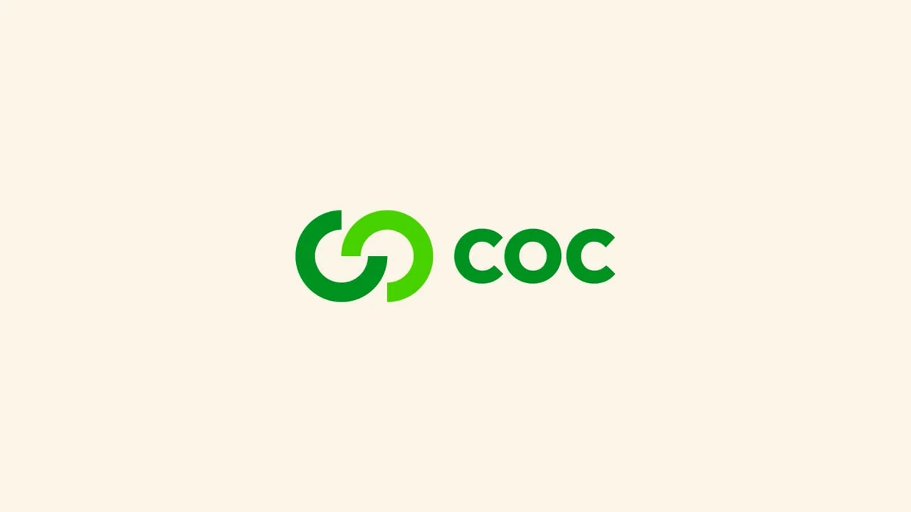
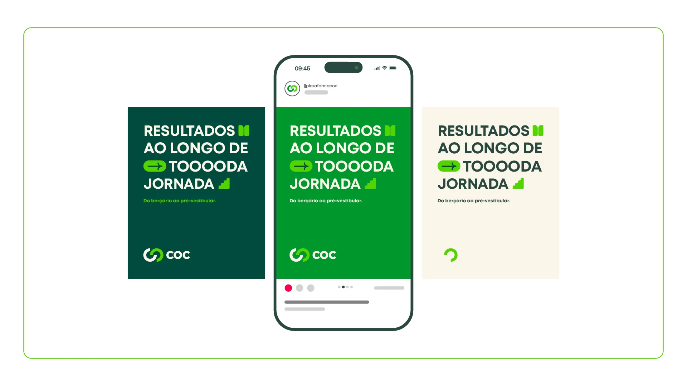
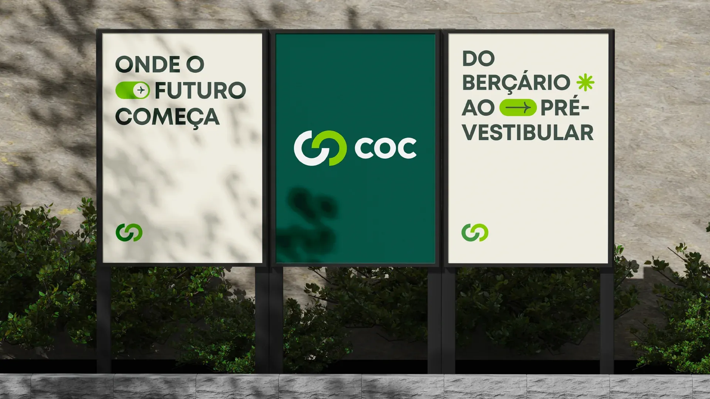
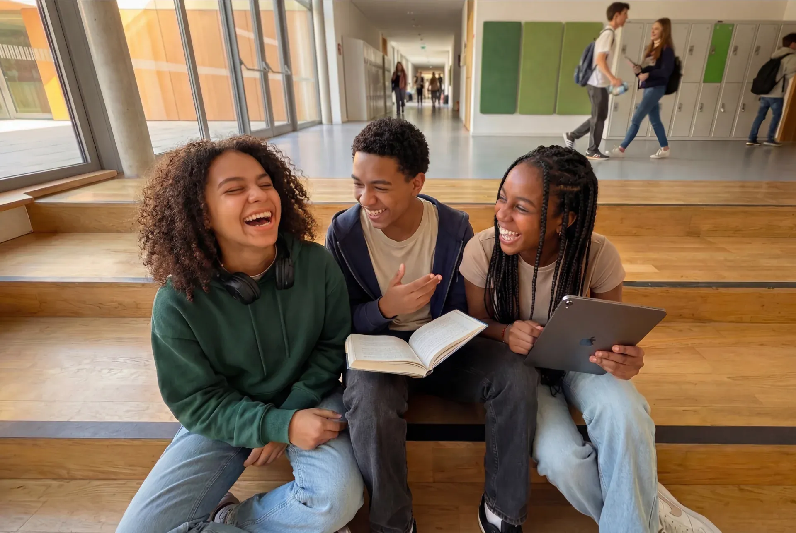
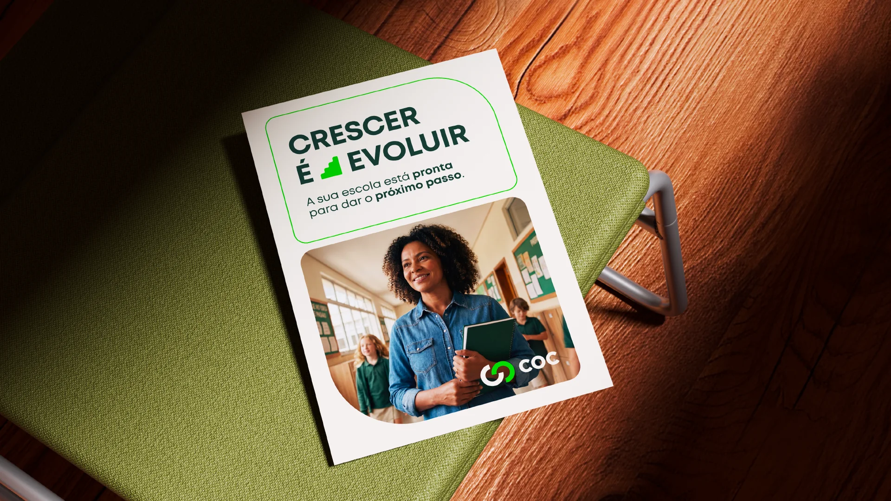
O resultado